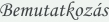

|
|

|
Juhász Katalin
okleveles pszichológus,
klinikai gyermekszakpszichológus,
felnőtt-gyermek hipnoteraputa vagyok.
|
 |
Köszönöm, hogy felkeresett honlapomon! Kérem, tekintse meg
bemutatkozásom és tevékenységem rövid leírását!
Tanulmányaimat az ELTE pszichológia szakon, nappali tagozaton végeztem
1978-ban.
A diploma megszerzése után évekig az egészségügyben, felnőtt
pszichiátriai osztályon dolgoztam. A gyermekeimmel otthon töltött „gyes-es”
évek után - a gyermeknevelésben szerzett saját élményeimet is
kamatoztatva - a gyermekpszichológia területén helyezkedtem el. A gyakorlatban eltöltött
néhány év után klinikai gyermekpszichológiából szakvizsgáztam.
Közben több módszerspecifikus képzésen vettem részt. A megtanult módszerek
felnőttek és gyermekek esetében egyaránt jól hasznosíthatóak,
így sikerült a terápiás lehetőségeim tárházát bővítenem.
(relaxáció-autogén tréning, pszichodráma, tinédzserügyelet,
játékterápia, művészetterápia, baba-mama terápia)
Egyre inkább olyan módszert kerestem, melynek segítségével akár
a feltáró, akár a terápiás folyamatot lerövidíthetném
a klienseim részére, hisz mindenkinek kevés az ideje, illetve fontos számukra,
hogy mihamarabb megoldódjanak gondjaik. A hipnoterápia lett ez a módszer, melyet mind
a gyermekek mind a felnőttek esetében jól tudok alkalmazni. Az ELTE Magyar Hipnózis
Egyesületénél szereztem a hipnoterapeutai képesítésemet, majd az
NLP módszerével tovább finomítottam ismereteimet.
Végzettségeim:
- 1978 okleveles pszichológus – ELTE, nappali tagozat
- 1991 klinikai gyermekszakpszichológus – Orvostovábbképző Intézet,
szakvizsga
- 1995 tinédzser ügyelet – Saját Úton Alapítvány
(Dr. Lust Iván)
- 2005 hipnoterapeuta vizsga – Magyar Hipnózis Egyesület, akkreditált
módszerspecifikus képzés
- 2001 baba-mama terápia -akkreditált módszerspecifikus képzés
Dr.Molnár Irén
- 2007 NLP – Aktív Transz NLP Hungária Egyesület, akkreditált
módszerspecifikus képzés
A szakmában eltöltött 30 év tapasztalata és az elért
eredmények remélhetőleg további lehetőséget nyújtanak számomra a
minél szakszerűbb segítségadásra.
Munkámat egyéni vállalkozói igazolvánnyal végzem,
minden esetben a pszichológus etika és a titoktartás szabályai szerint
és a 38/2010 sz. ÁNTSZ működési engedély alapján.
Vissza a lap tetejére |
|